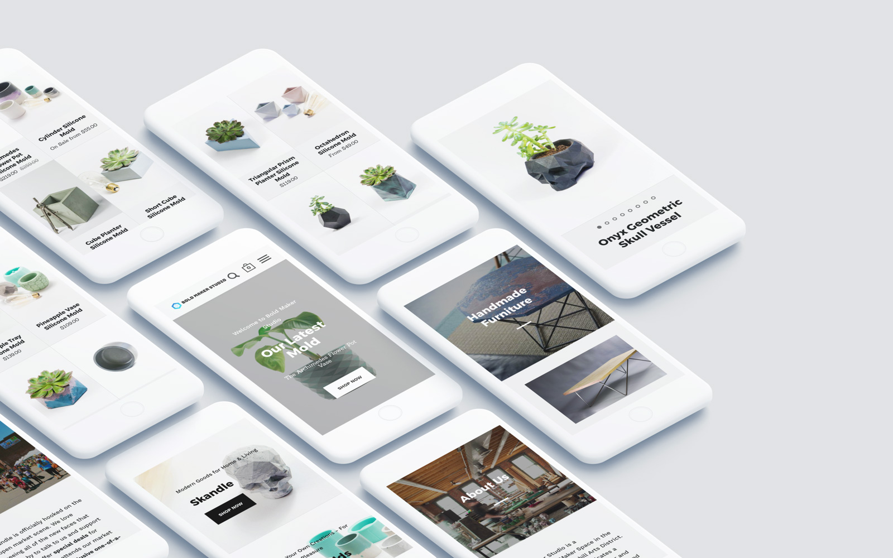
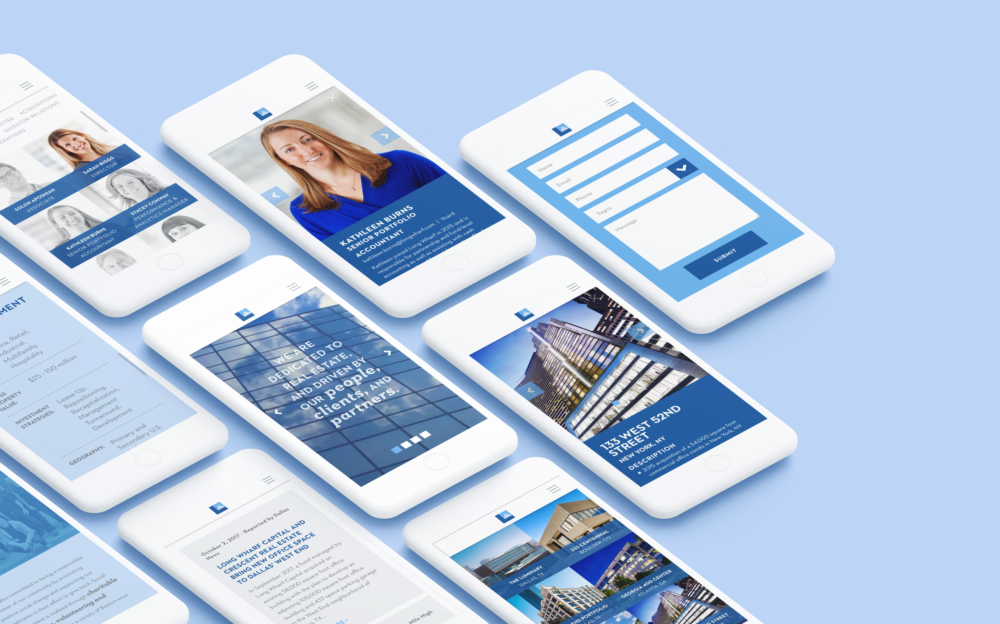
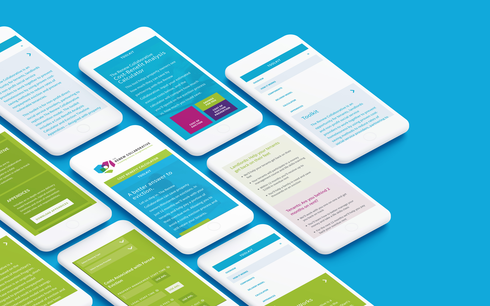
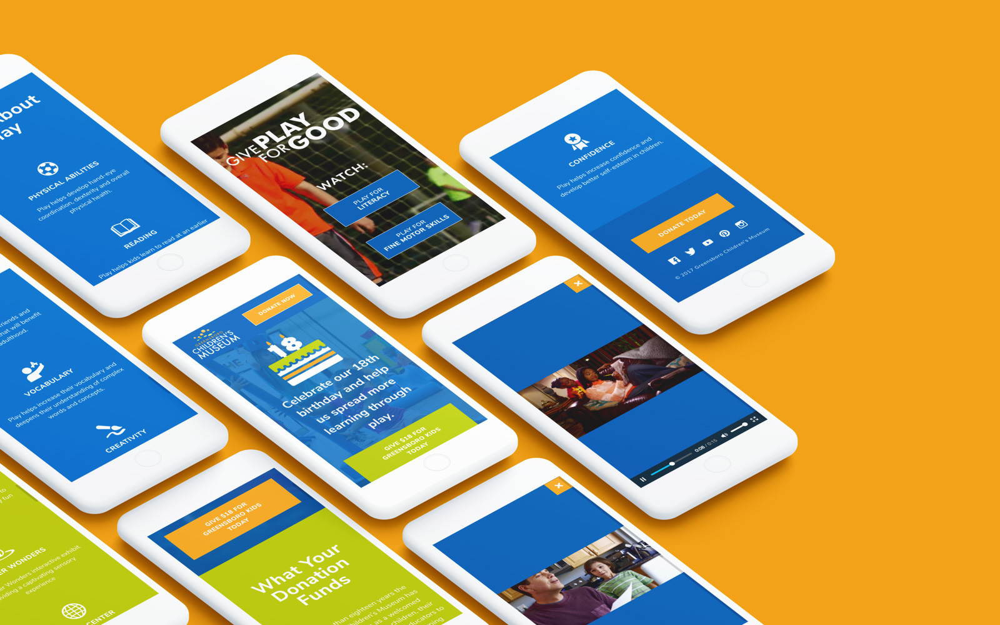
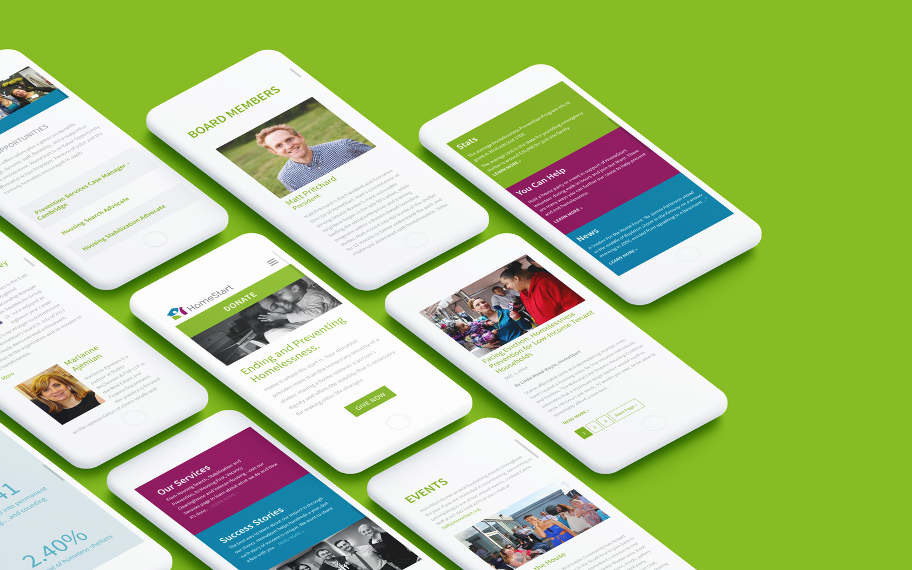

Hello,
I'm a full-stack developer focused on front-end mobile design. My approaoch advocates Design Thinking and User Experience methods to build the best digital products posisble.
Recent Projects
Here are some cool web apps I've worked on.
-

- Bold Maker Studio
- My brother's product design company in Haverhill, MA. While migrating from WooCommerce to Shopify, we rebranded and redesigned the site from the bottom up.
- Hats: UX Designer, Photographer, Developer
- Tools:Lightroom, Photoshop, Illustrator, Shopify
-

- Long Wharf Capital
- Real esate investment firm in Boston MA. I developed a unique WordPress theme with custom post types for the staff and investment portfolio.
- Hats: Mobile UI Designer, Full-Stack Developer
- Tools: Wireframe, HTML, Gulp, SASS, Wordpress, Timber
-

- Edgewood Country Club
- An inclusive club, golf course, and wedding/event venue in Edgewood. I developed the front-end framework and helped design the user interface.
- Hats: Mobile UI Designer, Full-Stack Developer
- Tools: HTML, SASS, JS, Gulp, Nunjucks
-

- The Renew Collaborative
- Now in testing, this online resource will be used by non-profits nation-wide to implement HomeStart's proven eviction-prevention strategy.
- Hats: Mobile UI Designer, Front-End Developer
- Tools: HTML, SASS, JS, Gulp, Nunjucks
-

- Give Play For Good
- The landing page for Greensboro Childrens Museum's media campaign, Give Play For Good. I built the page and created the logo animation used in TV commercial and digital ads.
- Hats: Mobile UI Designer, Full-Stack Developer, Motion Designer
- Tools: Wireframe, HTML, SASS, JS, Premiere Pro
-

- HomeStart
- A non-profit seeking to eliminate homelessness in Boston. I was honored to be UX designer, reorganize and redesign the site visually before moving on to development.
- Hats: UX & UI Designer, Front-End Developer
- Tools: Wireframe, Photoshop, HTML, CSS, WordPress
Past Experience
- My first interactive design applications date back to 2003 when Flash was all the rage.
- I got started with freelance web development in 2008 and have learned more as a developer each year.
- In Summer 2012 I was an instructor with ID Tech Camps, teaching Photography and Web Development courses to kids and teens on the MIT campus.
- I've been employed as a web developer at Primary since April 2013, and was promoted to Web Department manager in 2015.
- In 2016 I won a bronze Hatch Award for the landing page design of Martha's Vineyard Dressing Co.
Dev Skills
HTML5
I enjoy coding with semantic HTML5 — it's more meaningful to my fellow developers and better-suited for modern devices, browsers and search engines.
SASS
Who knew working with CSS could be so much fun? SASS has not only made coding-life easier, it's helped me grow as a front-end developer.
Mobile
Always mobile-first, BrowserStack and device testing assist in my devlepment workflow. When I'm crafting web components and design systems, no screen size goes overlooked.
GIT & Github
I know my way around Terminal, GitHub.com and Git to collaborate with a team of developers.
GULP
Gulp and other task runners save countless hours from my development workflow. They can be used to handle BrowserSync or browser prefixes, compile preprocessors, concatenate, minify, template, theme, and more.
Design Skills
User Experience
Learning and applying UXD has transformed my web design workflow. With proper planning, research and testing, business goals and user objectives can live and succeed in harmony.
User Interface
A good UI begins with competive research and plenty of sketching. Understand the problem and allow usability testing to iron out any issues. Last but not least, apply strong visual design.
Responsive / Web
The first iPhone released around when I began learning web design. For myself like many designers, adapting to the constraints of mobile was a major turning point.
Graphic
While majoring in Visual Communications at Framingham State University, I gained a deeper understanding of graphic design and its principles. I'm still learning today but am confident working with all of Adobe's design apps.
Motion
Since drawing flipbooks as a kid I've always dabbled in animation. Today my motion design chops apply to projects in Adobe Animate, Premiere Pro, CSS3 and JavaScript.